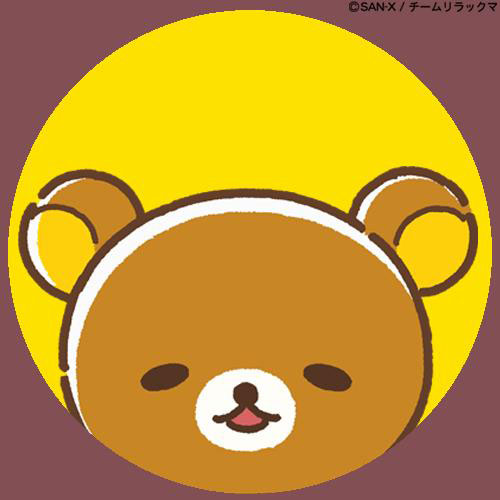
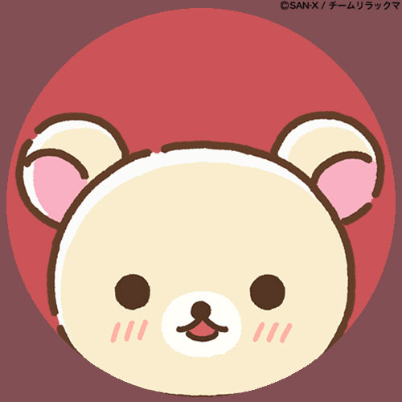
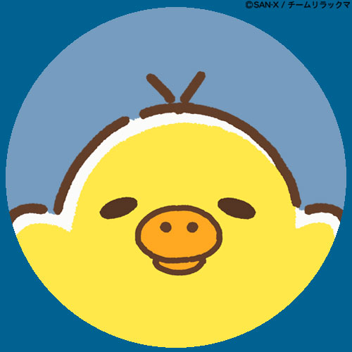
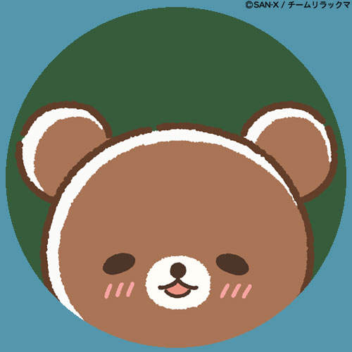

웹디자인 과제 - 컴퓨터공학과 2024101402 김민정

| 이름 | 리락쿠마 |
|---|---|
| 종류 | 곰 캐릭터 |
| 성격 | 느긋함, 여유로움 |
| 좋아하는 것 | 낮잠, 간식, 휴식 |
리락쿠마는 일본 캐릭터 브랜드 SAN-X의 대표 캐릭터다. 이름은 Relax와 Kuma(곰)의 합성어로, 느긋하게 쉬는 것을 좋아하는 곰이라는 뜻을 담고 있다.
리락쿠마는 늘 느긋하고 여유로운 모습이 특징인 캐릭터다. 바쁘게 움직이기보다 쉬거나 맛있는 걸 먹으며 조용하고 평화로운 하루를 보내는 장면이 자주 나온다.
단순하고 귀여운 생김새, 따뜻한 색감, 편안한 분위기 덕분에 오랫동안 많은 사람들에게 사랑받아 온 캐릭터다.

하얀 곰 캐릭터로 장난기가 많고 활발하다. 리락쿠마와 함께 자주 등장하며 귀여운 분위기를 더해준다.

노란 새 캐릭터로 꼼꼼하고 부지런한 편이다. 느긋한 리락쿠마와 대비되는 매력을 가지고 있다.

숲에서 온 갈색 곰 캐릭터로, 순하고 호기심 많은 성격을 가지고 있다. 포근하고 따뜻한 매력을 보여준다.
리락쿠마를 주제로 선택한 이유는, 단순히 귀여운 캐릭터라서가 아니라 바쁜 일상 속에서 쉬어가도 괜찮다는 메시지를 자연스럽게 담고 있는 캐릭터라고 느꼈기 때문이다.
페이지 전체 디자인도 그 분위기에 맞게 베이지 계열 색상과 단정한 레이아웃으로 구성했다.